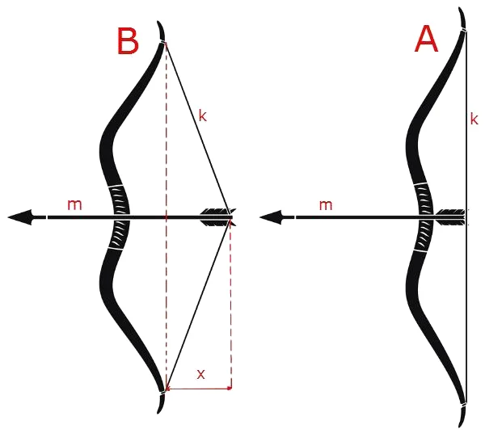
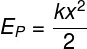

Energia e Astronomia
Energia potencial elástica é a forma de energia que é adquirida por corpos
elásticos capazes de retornarem ao seu formato original após sofrerem algum tipo de
deformação.
- Molas: alguns amortecedores de veículos, molas de colchões etc;
- Látex: tiras de borracha, trampolim, bola de borracha etc.

No sistema de arco e flecha, para conseguir
acertar um alvo, uma pessoa usa a energia dos músculos para
puxar o fio e a flecha para trás. Com isso, uma energia
potencial elástica fica represada no fio esticado. Quando a
pessoa solta a corda, essa energia é convertida em energia
cinética para a flecha.
Aplicações
A maior parte das aplicações da energia potencial elástica diz respeito ao armazenamento ou
conversão da energia cinética por objetos elásticos. Um bom exemplo disso são os amortecedores
e os para-choques de veículos e arco do arco e flecha.
A lei de Hooke afirma que a força elástica surge em reação à compressão ou ao tensionamento
de corpos elásticos.
F=k.x
- F - Força (N)
- k - Constante elástica (N/m)
- x - Deformação do objeto (m)
Como calcular a energia potencial elástica

- Ep - Energia potencial elástica (J - Joules)
- k - Constante elástica (N/m)
- x - Deformação do objeto (m)
1) Uma mola é comprimida por uma força de 150N tendo comprimento reduzido de 30cm para
40cm. Qual a energia potencial elástica desta mola? Respostas
F = 150N
x = 40 - 30 = 10cm
F = k.x
150 = k.10
150 = k
10
k = 15 N/m
E c = k.x²
2
E c = 15.10²
2
E c = 15.100
2
E c = 1500 J
2
E c = 7500 J
2) Uma mola de constante elástica igual a 20 N/m é esticada, e seu comprimento, que era
inicialmente de 20 cm, passa a ser de 50 cm. Qual é o módulo da energia potencial elástica
armazenada nessa mola?
3)Uma mola é comprimida por uma força de 200 N e tem o seu comprimento reduzido em 50 cm.
Qual é a energia potencial elástica adquirida pela mola?